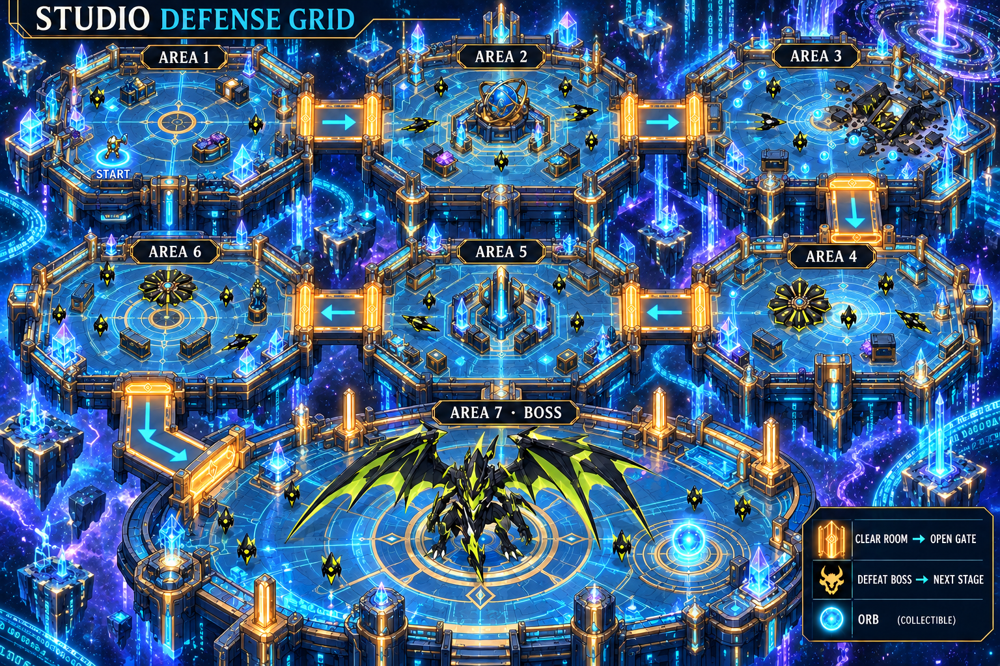
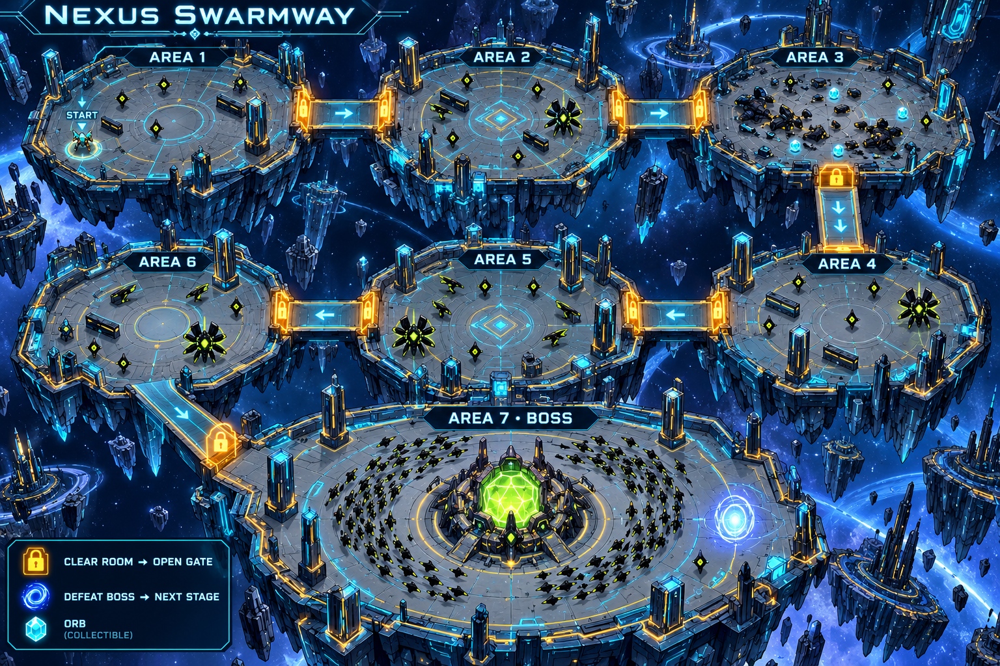
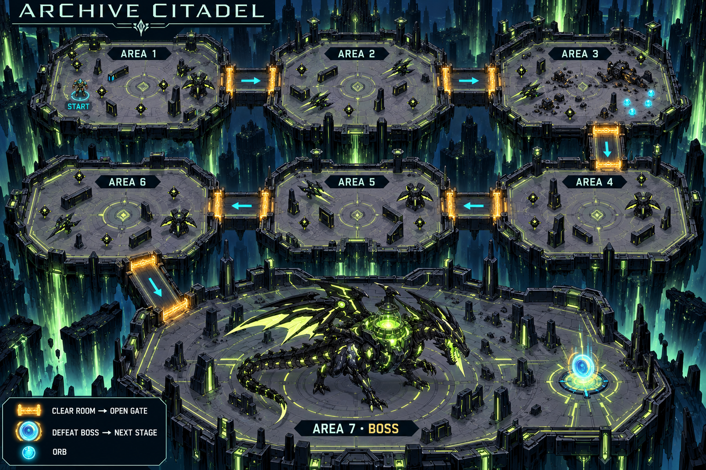

Each map takes place inside a server containing a city or world in the AI digital universe. Rogue Archive infiltration causes problems in its Nexus Narrative. Evos track the intruders through circuit portals and gateways to defend the affected server-world.
Seven areas per level: six combat stations followed by the final boss arena. Floating data platforms, cosmic space, circuit terrain and holographic structures place every map inside the Nexus.
Correct quiz answers power attacks → defeated Archives drop orbs → clear every enemy and required wave → open the next gate → defeat the final boss → unlock the next stage.
Concept art, not playable maps. Enemy counts are illustrative; gameplay uses the documented 7:1 Scout/Interceptor ratio. Gate collision and room-clear logic require implementation.


